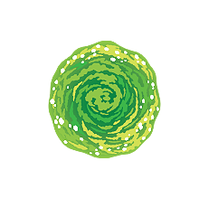

Saison 5

Plongez dans l'univers excentrique de la saison 2 de 'Rick et Morty' ! Notre fansite propose analyses approfondies, contenus exclusifs et une communauté passionnée pour explorer ensemble les secrets de la série.
Saison 5 Épisode 1
Nuit chargée chez les Smith : Rick reçoit la visite de son ennemi juré et Morty invite une fille. Puis des choses étranges se produisent avec une porte dans le garage.
Saison 5 Épisode 2
Des calamars tueurs veulent la peau des Smith. Heureusement, Rick a créé une famille leurre. À moins qu'elle ne soit réelle. Qu'est-ce que le réel ? Êtes-vous réels ?
Saison 5 Épisode 3
Lorsque Morty tombe raide dingue d'une superhéroïne écolo, Summer embarque avec Rick dans une virée apocalyptique et interplanétaire placée sous le signe de l'hédonisme.
Saison 5 Épisode 4
Les Smith se serrent les coudes face à une armée de spermatozoïdes géants et mutants. Tout le monde se porterait mieux si Morty restait bien loin du travail de Beth.
Saison 5 Épisode 5
Beth s'incruste à la soirée de Rick et Jerry, pendant que Morty et Summer tentent de se servir d'un vaisseau spatial pour impressionner un nouveau venu à l'école.
Saison 5 Épisode 6
Rick se transforme en dinde après avoir volé dans les plumes du Président le jour de Thanksgiving, et la situation devient rapidement hors de contrôle.
Saison 5 Épisode 7
Les Smith reçoivent une leçon sur le sens de la famille lorsque Rick annule un voyage à Nibars Land pour obtenir le cinquième et dernier furet GoTron.
Saison 5 Épisode 8
Alors que le reste de la famille est parti en croisière, Rick se retrouve seul à la maison face à ses gadgets et décide de renouer avec un vieil ami.
Saison 5 Épisode 9
Quand Rick décide de faire équipe avec des oiseaux, Morty trouve un nouveau partenaire dans un portail. Leur collaboration interdimensionnelle toucherait-elle à sa fin ?